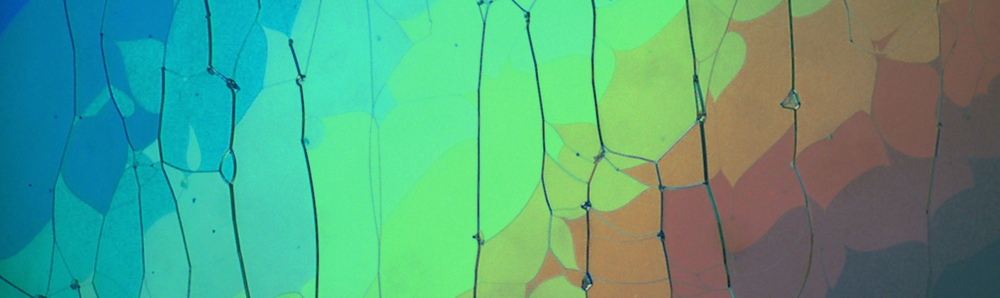

Ferroelectric Nematic Liquid Crystals:
Unravelling the Origins of Polar Order
Emerging polar phases · microscopic mechanisms · advanced experimental physics

The research project
Ferroelectric nematic liquid crystals combine the fluidity of conventional liquid crystals with spontaneous electric polarization and extraordinary electro-optical properties. Their discovery has opened a rapidly developing field of soft condensed matter physics, revealing new polar mesophases with strong technological potential.
This PhD project will investigate the microscopic origins of ferroelectric order and how molecular organization, collective dynamics and macroscopic polarization are connected. We will explore novel ferroelectric nematic materials and related phases, their transitions, polarization dynamics and response to electric fields.
The work will combine broadband dielectric spectroscopy, nonlinear optics, polarization-switching and electro-optical measurements with structural X-ray diffraction (SAXS/WAXS), polarized optical microscopy and thermal analysis. These complementary approaches will help identify emerging mesophases and connect their structure with their physical properties and collective behavior.
Research will be carried out within the Bilbao Liquid Crystal Group, in collaboration with leading international teams, addressing fundamental questions with relevance to photonics, advanced electro-optics and future functional materials.
Requirements
Academic qualifications are essential; other skills can be learned during the PhD.
- Education. Bachelor's degree in Physics, Materials Science or a closely related field, plus a Master's degree granting access to a doctoral programme in Physics or a related discipline (or to be completed before starting).
- Useful background (not required). Condensed matter physics, optics, dielectric spectroscopy, materials characterization, laboratory methods or Python-based data analysis.
- Motivation. Curiosity about fundamental physics, enthusiasm for experiments, teamwork in an international environment, and English sufficient for scientific communication.
What we offer
- Funding. Full funding is available through research grants and competitive doctoral fellowships, subject to eligibility.
- Training. Hands-on training in dielectric spectroscopy, nonlinear optics, electro-optics, X-ray diffraction and liquid-crystal characterization. No prior experience required.
- Facilities. Specialized liquid-crystal laboratories with custom-developed setups and, in some cases, unique measurement capabilities.
- Research environment. Active research group, close supervision and opportunities to develop experimental and analytical skills.
- International network. Leading collaborators worldwide and opportunities for research stays, exchanges and conferences.
Supervisors
Aitor Erkoreka and Josu Martínez-Perdiguero
Bilbao Liquid Crystal Group
Department of Physics · Faculty of Science and Technology
University of the Basque Country (EHU) · Leioa, Spain
Contact
Josu Martínez-Perdiguero